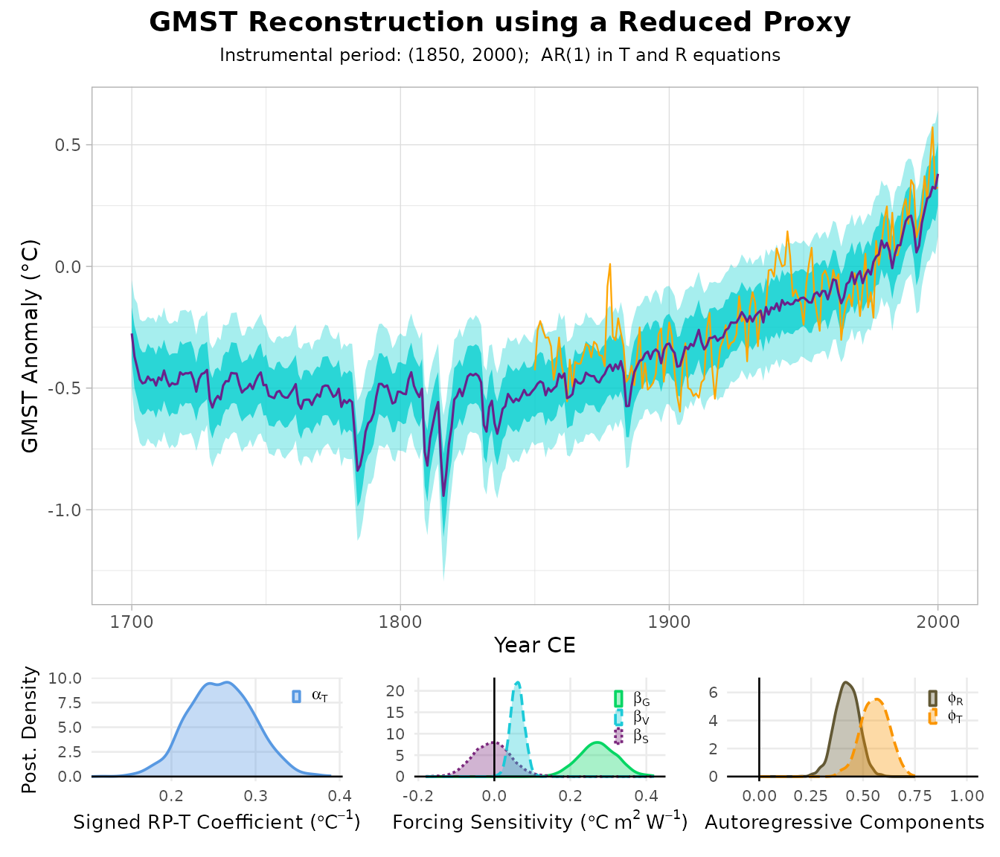
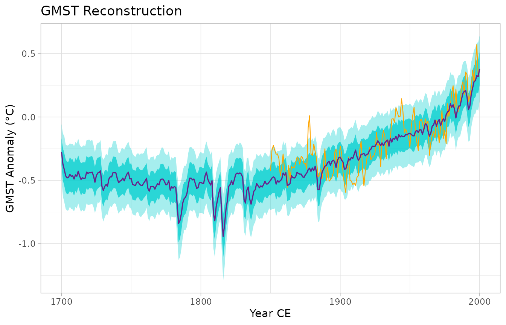
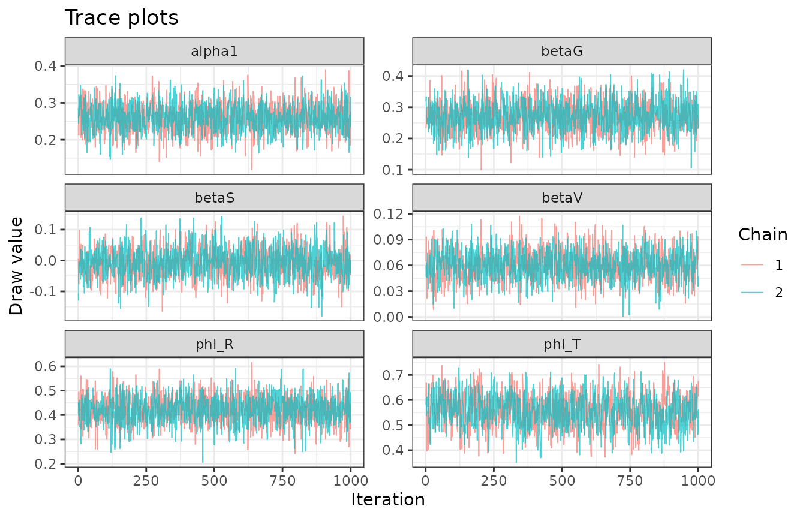
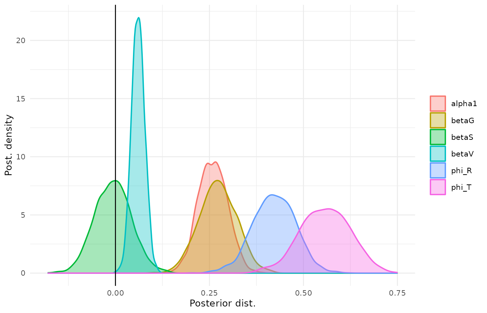
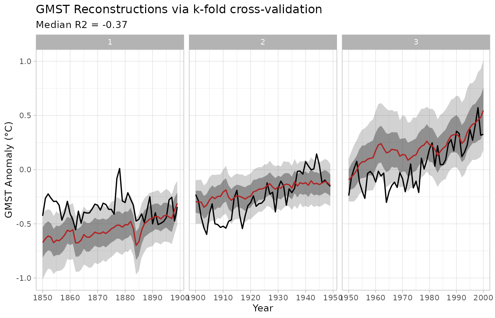

This vignette walks through the full BayGMST workflow end to end,
using small example datasets bundled with the package (trimmed subsets
of the data used in Bagwell et al., in prep.; see
system.file("extdata", package = "BayGMST")). It replaces
the config.yml-driven scripts the package was originally
built from – see NEWS.md and
system.file("legacy-scripts", package = "BayGMST").
1. Load example data
proxy_matrix <- read.csv(
system.file("extdata", "example_proxy_matrix.csv", package = "BayGMST")
)
forcing_raw <- read.csv(
system.file("extdata", "example_forcing.csv", package = "BayGMST")
)
instrumental_raw <- read.csv(
system.file("extdata", "example_instrumental_temperature.csv", package = "BayGMST")
)
# read.csv() mangles "Time"/"Anomaly (deg C)" headers via make.names(); give
# them stable names instead of relying on the mangled spelling.
colnames(instrumental_raw)[1:2] <- c("Time", "Anomaly")
years <- forcing_raw$year
head(proxy_matrix)
#> year SAm_030 SAm_026 SAm_025 Ocn_095 NAm_186 NAm_104
#> 1 1700 9.2943 -20.9760 0.463 -4.5324 0.652 1.021
#> 2 1701 9.2947 -18.8329 0.474 -4.6960 0.577 0.941
#> 3 1702 9.2951 -18.7600 0.660 -4.6556 0.831 0.982
#> 4 1703 9.2955 -19.9733 0.980 -4.3724 1.045 0.994
#> 5 1704 9.2959 -19.9486 0.735 -4.4295 0.876 0.973
#> 6 1705 9.2963 -21.1983 -0.357 -4.6110 0.672 0.9902. Reduce the proxy network to a single representative series
calib_years <- instrumental_raw$Time
rp <- reduce_proxies(
proxy_matrix = proxy_matrix[, -1],
years = proxy_matrix$year,
temp_calib = instrumental_raw$Anomaly,
calib_years = calib_years,
method = "PCR",
# `chunk` must be large enough that every segment (including the last,
# shortest one) still fully contains the calibration window (1850-2000,
# 151 years). This toy example only has 301 years total, so we use a
# single segment (chunk >= length(years)) rather than the package
# default of 250, which would create a too-short trailing segment here.
chunk = nrow(proxy_matrix)
)
rp
#> <baygmst_rp>
#> Method: PCR
#> Years: 1700 to 2000 (n = 301)
#> Segments: 1
#> Pass to fit_baygmst() directly, or use x$composite$RP1.rp can be passed to fit_baygmst() directly
(it is aligned to the model’s year grid by calendar year, via
as_baygmst_proxy()); the raw series lives in
rp$composite$RP1 if you need it. You do not have to use
reduce_proxies() at all – any reduced or composited proxy
series works here; see “Using composites from other packages” below.
3. Transform the radiative forcings
forcing <- transform_forcings(
G = forcing_raw$CO2,
V = forcing_raw$volcanic,
S = forcing_raw$solar
)4. Align everything onto the common year grid and fit the model
The proxy series is aligned automatically (by calendar year) when you
pass the reduce_proxies() output itself; the instrumental
series still needs aligning onto years by hand, with
NA marking the pre-instrumental years the model will
reconstruct:
instrumental_T <- instrumental_raw$Anomaly[match(years, instrumental_raw$Time)]Fitting requires a working CmdStan installation (via / ); see
vignette("cmdstanr", package = "cmdstanr") if you don’t
have one yet. The chunk below is skipped if none is found.
fit <- fit_baygmst(
proxy = rp,
instrumental_T = instrumental_T,
forcing_G = forcing$G,
forcing_V = forcing$V,
forcing_S = forcing$S,
years = years,
chains = 2,
parallel_chains = 2,
iter_warmup = 300,
iter_sampling = 1000,
seed = 1
)
#> Running MCMC with 2 parallel chains...
#>
#> Chain 1 Iteration: 1 / 1300 [ 0%] (Warmup)
#> Chain 2 Iteration: 1 / 1300 [ 0%] (Warmup)
#> Chain 1 Iteration: 100 / 1300 [ 7%] (Warmup)
#> Chain 1 Iteration: 200 / 1300 [ 15%] (Warmup)
#> Chain 2 Iteration: 100 / 1300 [ 7%] (Warmup)
#> Chain 1 Iteration: 300 / 1300 [ 23%] (Warmup)
#> Chain 1 Iteration: 301 / 1300 [ 23%] (Sampling)
#> Chain 2 Iteration: 200 / 1300 [ 15%] (Warmup)
#> Chain 1 Iteration: 400 / 1300 [ 30%] (Sampling)
#> Chain 2 Iteration: 300 / 1300 [ 23%] (Warmup)
#> Chain 2 Iteration: 301 / 1300 [ 23%] (Sampling)
#> Chain 1 Iteration: 500 / 1300 [ 38%] (Sampling)
#> Chain 2 Iteration: 400 / 1300 [ 30%] (Sampling)
#> Chain 1 Iteration: 600 / 1300 [ 46%] (Sampling)
#> Chain 2 Iteration: 500 / 1300 [ 38%] (Sampling)
#> Chain 2 Iteration: 600 / 1300 [ 46%] (Sampling)
#> Chain 1 Iteration: 700 / 1300 [ 53%] (Sampling)
#> Chain 2 Iteration: 700 / 1300 [ 53%] (Sampling)
#> Chain 1 Iteration: 800 / 1300 [ 61%] (Sampling)
#> Chain 2 Iteration: 800 / 1300 [ 61%] (Sampling)
#> Chain 1 Iteration: 900 / 1300 [ 69%] (Sampling)
#> Chain 2 Iteration: 900 / 1300 [ 69%] (Sampling)
#> Chain 1 Iteration: 1000 / 1300 [ 76%] (Sampling)
#> Chain 2 Iteration: 1000 / 1300 [ 76%] (Sampling)
#> Chain 1 Iteration: 1100 / 1300 [ 84%] (Sampling)
#> Chain 2 Iteration: 1100 / 1300 [ 84%] (Sampling)
#> Chain 1 Iteration: 1200 / 1300 [ 92%] (Sampling)
#> Chain 2 Iteration: 1200 / 1300 [ 92%] (Sampling)
#> Chain 1 Iteration: 1300 / 1300 [100%] (Sampling)
#> Chain 2 Iteration: 1300 / 1300 [100%] (Sampling)
#> Chain 1 finished in 2.9 seconds.
#> Chain 2 finished in 2.9 seconds.
#>
#> Both chains finished successfully.
#> Mean chain execution time: 2.9 seconds.
#> Total execution time: 3.0 seconds.
summary(fit)
#> Posterior parameter summary:
#> variable mean median sd mad q5
#> 1 alpha0 -0.065028365 -0.065352501 0.012581323 0.012354588 -0.08519683
#> 2 alpha1 0.259176863 0.259394285 0.038686100 0.039645569 0.19843176
#> 3 phi_R 0.421939053 0.422557005 0.056391144 0.057185328 0.33135071
#> 4 phi_T 0.557697091 0.558897910 0.066156538 0.068346622 0.44977236
#> 5 beta0 -0.203017805 -0.203466845 0.033991214 0.035376697 -0.25942460
#> 6 betaG 0.272715339 0.272000680 0.049631559 0.049397356 0.19069658
#> 7 betaS -0.006414658 -0.006468269 0.048658313 0.049626635 -0.08546052
#> 8 betaV 0.060345789 0.060124152 0.017424434 0.017244751 0.03208148
#> 9 sigma_y 0.103982659 0.103674475 0.006032221 0.005968366 0.09467305
#> 10 sigma_z 0.112829340 0.112775265 0.004726679 0.004596357 0.10514527
#> q95 rhat ess_bulk ess_tail
#> 1 -0.04372216 1.0027969 2656.2336 1384.502
#> 2 0.32287198 1.0021939 1374.3605 1461.680
#> 3 0.51107871 1.0002487 1794.0149 1732.952
#> 4 0.66394920 1.0022826 767.3195 1329.076
#> 5 -0.14860656 1.0037575 817.0683 1555.701
#> 6 0.35314789 1.0013899 1357.8888 1499.608
#> 7 0.07405890 1.0001183 1106.6513 1308.938
#> 8 0.08934192 0.9996564 1352.0124 1499.242
#> 9 0.11445876 1.0010497 916.8057 1372.267
#> 10 0.12082047 1.0051395 2550.9664 1327.587
#>
#> Instrumental-period fit performance:
#> RMSE MAE Bias Correlation R2 R2_detrended
#> 0.130152 0.1064078 -0.03095854 0.8547477 0.7305936 0.35184895. Visualize the reconstruction
plot() on a fitted model draws the summary figure used
in the PReSto manuscript: the reconstruction on top and the posterior
densities of the model parameters below (this needs the ‘patchwork’
package).
plot(fit)
The panels are also available individually:
plot_reconstruction(fit)
plot_trace(fit)

6. Cross-validate
cv <- cv_baygmst(
proxy = rp,
instrumental_T = instrumental_T,
forcing_G = forcing$G,
forcing_V = forcing$V,
forcing_S = forcing$S,
years = years,
nfold = 3,
chains = 2,
parallel_chains = 2,
iter_warmup = 300,
iter_sampling = 1000,
seed = 1
)
#> Running MCMC with 2 parallel chains...
#>
#> Chain 1 Iteration: 1 / 1300 [ 0%] (Warmup)
#> Chain 2 Iteration: 1 / 1300 [ 0%] (Warmup)
#> Chain 2 Informational Message: The current Metropolis proposal is about to be rejected because of the following issue:
#> Chain 2 Exception: normal_lpdf: Scale parameter is 0, but must be positive! (in '/tmp/Rtmp53IqqQ/model-1caf7952876a.stan', line 75, column 2 to column 40)
#> Chain 2 If this warning occurs sporadically, such as for highly constrained variable types like covariance matrices, then the sampler is fine,
#> Chain 2 but if this warning occurs often then your model may be either severely ill-conditioned or misspecified.
#> Chain 2
#> Chain 1 Iteration: 100 / 1300 [ 7%] (Warmup)
#> Chain 2 Iteration: 100 / 1300 [ 7%] (Warmup)
#> Chain 2 Iteration: 200 / 1300 [ 15%] (Warmup)
#> Chain 1 Iteration: 200 / 1300 [ 15%] (Warmup)
#> Chain 1 Iteration: 300 / 1300 [ 23%] (Warmup)
#> Chain 1 Iteration: 301 / 1300 [ 23%] (Sampling)
#> Chain 2 Iteration: 300 / 1300 [ 23%] (Warmup)
#> Chain 2 Iteration: 301 / 1300 [ 23%] (Sampling)
#> Chain 2 Iteration: 400 / 1300 [ 30%] (Sampling)
#> Chain 1 Iteration: 400 / 1300 [ 30%] (Sampling)
#> Chain 2 Iteration: 500 / 1300 [ 38%] (Sampling)
#> Chain 1 Iteration: 500 / 1300 [ 38%] (Sampling)
#> Chain 2 Iteration: 600 / 1300 [ 46%] (Sampling)
#> Chain 1 Iteration: 600 / 1300 [ 46%] (Sampling)
#> Chain 2 Iteration: 700 / 1300 [ 53%] (Sampling)
#> Chain 1 Iteration: 700 / 1300 [ 53%] (Sampling)
#> Chain 2 Iteration: 800 / 1300 [ 61%] (Sampling)
#> Chain 1 Iteration: 800 / 1300 [ 61%] (Sampling)
#> Chain 2 Iteration: 900 / 1300 [ 69%] (Sampling)
#> Chain 2 Iteration: 1000 / 1300 [ 76%] (Sampling)
#> Chain 1 Iteration: 900 / 1300 [ 69%] (Sampling)
#> Chain 2 Iteration: 1100 / 1300 [ 84%] (Sampling)
#> Chain 1 Iteration: 1000 / 1300 [ 76%] (Sampling)
#> Chain 2 Iteration: 1200 / 1300 [ 92%] (Sampling)
#> Chain 1 Iteration: 1100 / 1300 [ 84%] (Sampling)
#> Chain 2 Iteration: 1300 / 1300 [100%] (Sampling)
#> Chain 2 finished in 3.7 seconds.
#> Chain 1 Iteration: 1200 / 1300 [ 92%] (Sampling)
#> Chain 1 Iteration: 1300 / 1300 [100%] (Sampling)
#> Chain 1 finished in 4.2 seconds.
#>
#> Both chains finished successfully.
#> Mean chain execution time: 3.9 seconds.
#> Total execution time: 4.2 seconds.
#>
#> Running MCMC with 2 parallel chains...
#>
#> Chain 1 Iteration: 1 / 1300 [ 0%] (Warmup)
#> Chain 2 Iteration: 1 / 1300 [ 0%] (Warmup)
#> Chain 2 Informational Message: The current Metropolis proposal is about to be rejected because of the following issue:
#> Chain 2 Exception: normal_lpdf: Scale parameter is 0, but must be positive! (in '/tmp/Rtmp53IqqQ/model-1caf7952876a.stan', line 75, column 2 to column 40)
#> Chain 2 If this warning occurs sporadically, such as for highly constrained variable types like covariance matrices, then the sampler is fine,
#> Chain 2 but if this warning occurs often then your model may be either severely ill-conditioned or misspecified.
#> Chain 2
#> Chain 2 Iteration: 100 / 1300 [ 7%] (Warmup)
#> Chain 2 Iteration: 200 / 1300 [ 15%] (Warmup)
#> Chain 2 Iteration: 300 / 1300 [ 23%] (Warmup)
#> Chain 2 Iteration: 301 / 1300 [ 23%] (Sampling)
#> Chain 1 Iteration: 100 / 1300 [ 7%] (Warmup)
#> Chain 2 Iteration: 400 / 1300 [ 30%] (Sampling)
#> Chain 2 Iteration: 500 / 1300 [ 38%] (Sampling)
#> Chain 2 Iteration: 600 / 1300 [ 46%] (Sampling)
#> Chain 2 Iteration: 700 / 1300 [ 53%] (Sampling)
#> Chain 2 Iteration: 800 / 1300 [ 61%] (Sampling)
#> Chain 1 Iteration: 200 / 1300 [ 15%] (Warmup)
#> Chain 2 Iteration: 900 / 1300 [ 69%] (Sampling)
#> Chain 2 Iteration: 1000 / 1300 [ 76%] (Sampling)
#> Chain 2 Iteration: 1100 / 1300 [ 84%] (Sampling)
#> Chain 2 Iteration: 1200 / 1300 [ 92%] (Sampling)
#> Chain 1 Iteration: 300 / 1300 [ 23%] (Warmup)
#> Chain 1 Iteration: 301 / 1300 [ 23%] (Sampling)
#> Chain 2 Iteration: 1300 / 1300 [100%] (Sampling)
#> Chain 2 finished in 2.0 seconds.
#> Chain 1 Iteration: 400 / 1300 [ 30%] (Sampling)
#> Chain 1 Iteration: 500 / 1300 [ 38%] (Sampling)
#> Chain 1 Iteration: 600 / 1300 [ 46%] (Sampling)
#> Chain 1 Iteration: 700 / 1300 [ 53%] (Sampling)
#> Chain 1 Iteration: 800 / 1300 [ 61%] (Sampling)
#> Chain 1 Iteration: 900 / 1300 [ 69%] (Sampling)
#> Chain 1 Iteration: 1000 / 1300 [ 76%] (Sampling)
#> Chain 1 Iteration: 1100 / 1300 [ 84%] (Sampling)
#> Chain 1 Iteration: 1200 / 1300 [ 92%] (Sampling)
#> Chain 1 Iteration: 1300 / 1300 [100%] (Sampling)
#> Chain 1 finished in 3.3 seconds.
#>
#> Both chains finished successfully.
#> Mean chain execution time: 2.6 seconds.
#> Total execution time: 3.4 seconds.
#>
#> Running MCMC with 2 parallel chains...
#>
#> Chain 1 Iteration: 1 / 1300 [ 0%] (Warmup)
#> Chain 2 Iteration: 1 / 1300 [ 0%] (Warmup)
#> Chain 2 Informational Message: The current Metropolis proposal is about to be rejected because of the following issue:
#> Chain 2 Exception: normal_lpdf: Scale parameter is 0, but must be positive! (in '/tmp/Rtmp53IqqQ/model-1caf7952876a.stan', line 75, column 2 to column 40)
#> Chain 2 If this warning occurs sporadically, such as for highly constrained variable types like covariance matrices, then the sampler is fine,
#> Chain 2 but if this warning occurs often then your model may be either severely ill-conditioned or misspecified.
#> Chain 2
#> Chain 1 Iteration: 100 / 1300 [ 7%] (Warmup)
#> Chain 2 Iteration: 100 / 1300 [ 7%] (Warmup)
#> Chain 1 Iteration: 200 / 1300 [ 15%] (Warmup)
#> Chain 2 Iteration: 200 / 1300 [ 15%] (Warmup)
#> Chain 2 Iteration: 300 / 1300 [ 23%] (Warmup)
#> Chain 2 Iteration: 301 / 1300 [ 23%] (Sampling)
#> Chain 1 Iteration: 300 / 1300 [ 23%] (Warmup)
#> Chain 1 Iteration: 301 / 1300 [ 23%] (Sampling)
#> Chain 2 Iteration: 400 / 1300 [ 30%] (Sampling)
#> Chain 1 Iteration: 400 / 1300 [ 30%] (Sampling)
#> Chain 2 Iteration: 500 / 1300 [ 38%] (Sampling)
#> Chain 1 Iteration: 500 / 1300 [ 38%] (Sampling)
#> Chain 2 Iteration: 600 / 1300 [ 46%] (Sampling)
#> Chain 1 Iteration: 600 / 1300 [ 46%] (Sampling)
#> Chain 2 Iteration: 700 / 1300 [ 53%] (Sampling)
#> Chain 1 Iteration: 700 / 1300 [ 53%] (Sampling)
#> Chain 2 Iteration: 800 / 1300 [ 61%] (Sampling)
#> Chain 1 Iteration: 800 / 1300 [ 61%] (Sampling)
#> Chain 2 Iteration: 900 / 1300 [ 69%] (Sampling)
#> Chain 1 Iteration: 900 / 1300 [ 69%] (Sampling)
#> Chain 2 Iteration: 1000 / 1300 [ 76%] (Sampling)
#> Chain 1 Iteration: 1000 / 1300 [ 76%] (Sampling)
#> Chain 2 Iteration: 1100 / 1300 [ 84%] (Sampling)
#> Chain 1 Iteration: 1100 / 1300 [ 84%] (Sampling)
#> Chain 2 Iteration: 1200 / 1300 [ 92%] (Sampling)
#> Chain 1 Iteration: 1200 / 1300 [ 92%] (Sampling)
#> Chain 2 Iteration: 1300 / 1300 [100%] (Sampling)
#> Chain 2 finished in 3.7 seconds.
#> Chain 1 Iteration: 1300 / 1300 [100%] (Sampling)
#> Chain 1 finished in 4.0 seconds.
#>
#> Both chains finished successfully.
#> Mean chain execution time: 3.9 seconds.
#> Total execution time: 4.1 seconds.
cv
#> <baygmst_cv>
#> Folds: 3
#> R2 (posterior mean, per fold): -4.11, 0.24, -0.37
#> Median R2: -0.37
plot_cv(cv)
7. Using composites from other packages
reduce_proxies() is one way to produce the model’s proxy
input, but not the only one. fit_baygmst()’s proxy equation
estimates its own intercept and slope against temperature, so any
reduced or composited proxy series on a reasonable scale works – a
standardized (z-score) composite or a temperature-anomaly-scale series
is appropriate; a raw-unit series with large numerical magnitude should
be standardized first.
as_baygmst_proxy() normalizes the common shapes such a
series arrives in. In particular, it accepts composite objects of the
shape produced by compositing packages in the LiPD ecosystem (such as
the in-development compositeR package,
whose compositeEnsembles2() is the intended primary pathway
for building BayGMST inputs from paleoclimate data): a list carrying
$ages (in years BP, i.e. before 1950 CE) and
$composite (rows = time steps, columns = ensemble members).
Here is a synthetic stand-in:
set.seed(1)
composite_ens <- list(
ages = seq(250, -50, by = -1), # 1700-2000 CE, in yr BP
composite = matrix(rnorm(301 * 50, sd = 0.2), 301, 50) +
seq(-0.2, 0.4, length.out = 301) # 50 ensemble members
)
proxy_input <- as_baygmst_proxy(composite_ens)
proxy_input
#> <baygmst_proxy>
#> Source: composite (50 members, median; ages BP)
#> Years: 1700 to 2000 CE (n = 301)
#> Ensemble: collapsed from 50 members
#> Range: [-0.247, 0.487]Ages are converted to calendar years and the ensemble is collapsed to
its median series (compositing uncertainty is therefore not yet
propagated into the posterior; the object records
n_ensemble so this can become an ensemble-aware pathway in
a future release). The result can be passed straight to
fit_baygmst(proxy = proxy_input, ...), which aligns it to
years by calendar year and errors informatively if any
requested year is not covered. Bare numeric vectors,
data.frames with year and value columns, and
time-by-ensemble matrices work the same way – see
?as_baygmst_proxy.